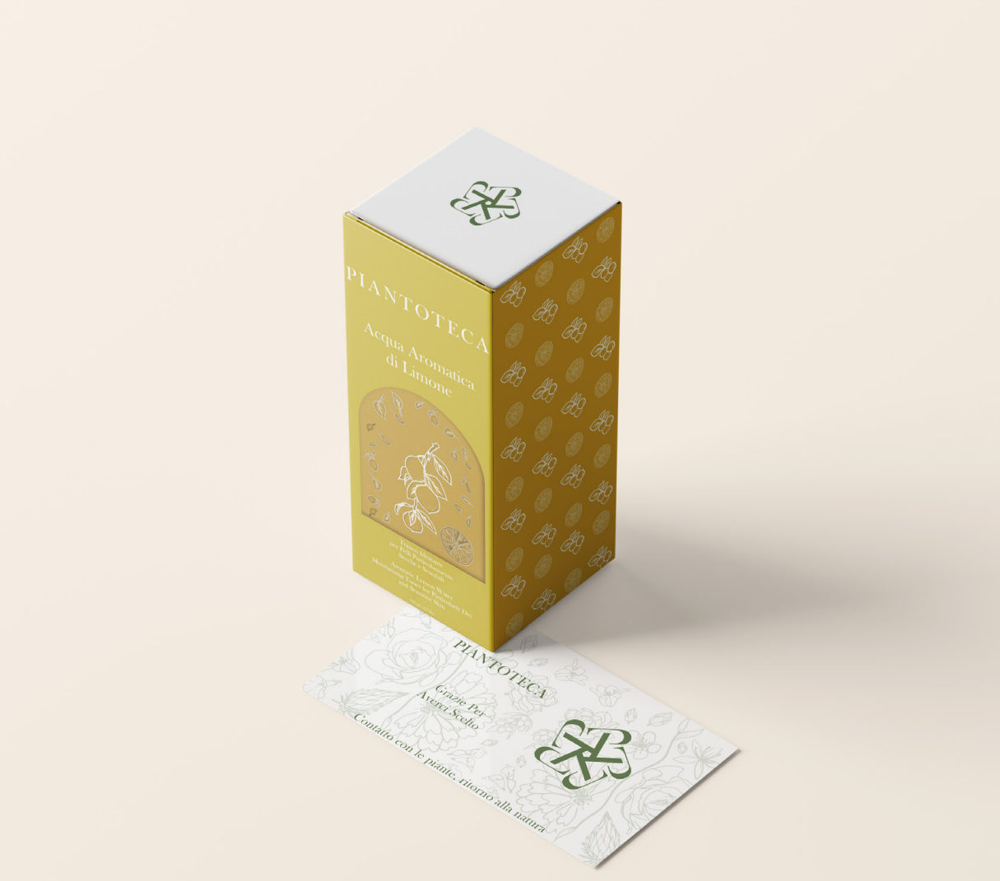

BUONVENUTO Gai Jingyun DESIGN

Portfolio-list
 Package di Spaghetti
Package di Spaghetti

Prodotti della pelle Musicultura
Package di Spaghetti
Musicultura
Package di Spaghetti

Prodotti della pelle
Musicultura